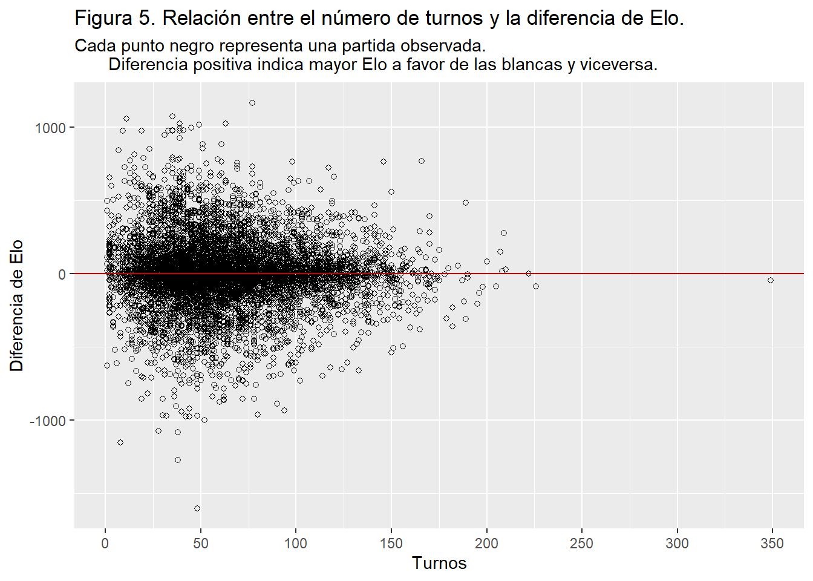

Análisis de Partidas de Ajedrez
Introducción
Contexto
El ajedrez moderno es un juego de mesa, el cual, desde su origen oriental, terminó de asentarse completamente a inicios del siglo XVI en el continente europeo. Desde esa época hasta el día de hoy, se ha convertido en un deporte reconocido mundialmente en el que se han realizado una inmensa cantidad de competiciones.
Una partida de ajedrez se disputa entre dos jugadores, uno contra uno; cada uno posee 16 piezas, cada una con su propia particularidad, siendo las de un jugador de color claro, llamadas blancas, y las de su oponente de color oscuro, llamadas negras. Las piezas se mueven sobre un tablero de ajedrez cuadrado de 64 casillas. El ajedrez no es un juego de azar, sino un juego racional y de estrategia, ya que cada jugador decidirá el movimiento de sus piezas en cada turno. Comienza a jugar quien lleve las blancas, lo que le concede una ventaja pequeña pero esencial en los niveles altos de competición.
En la siguiente imagen se da una representación visual de lo descrito al inicio del párrafo anterior:

Planteamiento del caso.
Hoy en día existen páginas y plataformas en línea para practicar, disfrutar y competir en este aclamado juego de estrategia.
Existen determinados factores que pueden afectar o predecir que un jugador gane a otro, ya sea el color de sus piezas, el Elo de los jugadores (correspondiente al nivel competitivo que presenta un jugador), la cantidad de turnos que dura una partida, el tipo de partida, entre otros.
Resulta relevante analizar estos factores, con motivo de estimar cuán equilibrado realmente se encuentra este deporte y su sistema de emperajemientos , si existe tendencia a un resultado debido a un factor específico y cómo varían las partidas dependiendo del nivel de los jugadores, ya que en partidas se enfrenta a jugadores de un nivel competitivo similar.
¿Es este juego realmente equilibrado o se encuentra sesgado en favor de uno de los bandos? ¿Influye el color del equipo en una partida de larga duración? ¿Es el Elo un sistema eficaz para medir el nivel de competencia de un jugador? ¿Influye el Elo de los jugadores en algunos resultados de la partida?
Con objetivo de aclarar estas incógnitas, en este proyecto realizaremos una exploración de los datos de distintas partidas de ajedrez, recabadas en la plataforma en línea “Lichess”, la cual es una plataforma en la que se disputan partidas y torneos de ajedrez diariamente. Analizaremos algunos de los factores que podrían influenciar en la victoria de un jugador por sobre otro y estimar qué tan equilibrado se encuentra este deporte.
Este trabajo se encuentra dividido en tres secciones: En la primera sección presentaremos y describiremos los datos y variables que serán utilizadas y los métodos que aplicaremos para su análisis. En la segunda sección, mostraremos los resultados obtenidos, organizados en base a las variables de interés. Para finalizar, en la tercera sección, presentaremos las conclusiones acerca de las variables que fueron llevadas al análisis y su influencia en el resultado de una partida.
Presentación de los datos.
Dentro de esta sección, daremos a conocer las variables que utilizaremos, además de los métodos que aplicaremos para su análisis.
En la siguiente tabla, se presentan las distintas variables de la base de datos con las que trabajaremos, su tipo y una descripción para entender mejor cómo funciona esta.
| Base de datos de Partidas de ajedrez en línea | ||
| Provenientes de la plataforma Lichess | ||
| Variable | Tipo | Descripción |
|---|---|---|
| Turnos | Cuantitativa discreta | Corresponde a la cantidad de turnos que duró la partida. |
| Ganador | Cualitativa nominal | Corresponde al equipo ganador de la partida, ya sea blancas o negras. En caso de haber un empate, no existe ganador, por lo que queda clasificado como 'empate'. |
| Elo Blancas | Cuantitativa discreta | Puntos de clasificación Elo del contrincante del equipo blanco. Representa el nivel competitivo del jugador dentro de la plataforma. |
| Elo Negras | Cuantitativa discreta | Puntos de clasificación Elo del contrincante del equipo negro. Representa el nivel competitivo del jugador dentro de la plataforma. |
| Diferencia de Elo | Cuantitativa discreta | Diferencia de Elo entre los contrincantes. Si su valor es positivo, indica que el jugador del equipo blanco tiene mayor Elo, y viceversa. |
| Elo promedio | Cuantitativa continua | Corresponde al promedio del Elo entre los dos jugadores. |
| Fuente: Kaggle.com | ||
Para el caso de los métodos que utilizaremos, nos basaremos principalmente en el uso de gráficos que representen la relación entre las distintas variables, con objetivo de responder a las preguntas hechas en el apartado de la introducción:
-Determinar si es el Elo un sistema eficaz para medir el nivel de competencia de un jugador y la efectividad del emparejamiento.
-Conocer si Influye la diferencia de Elo de los jugadores en el ganador de la partida.
-Determinar si este juego es realmente equilibrado o se encuentra sesgado en favor de uno de los bandos.
-Saber si Influye el color del equipo en una partida de larga duración.
Análisis de resultados.
Dentro de esta sección, procederemos con el análisis de datos y la presentación de los resultados obtenidos en base a la observación de gráficas.
Respecto al sistema de puntuación competitivo Elo, resulta relevante aclarar que, dentro de la plataforma Lichess, un jugador con un rango entre 1300 y 1700 se considera promedio, bajo ese rango se puede decir que el jugador es un principiante, mientras que por encima es uno intermedio que empieza a tener un nivel avanzado, y más arriba de 2000 de Elo, se podría considerar un jugador con un nivel bastante avanzado.
A continuación, en la Figura 1, nos encontramos con un gráfico de puntos en el que podemos observar la relación entre el nivel competitivo de dos jugadores en una partida. Cada punto representa una partida, mientras que su posición indica el Elo de cada contrincante:

Podemos observar claras tendencias de que se empareja a jugadores con un Elo similar entre sí. Existe un patrón de proporción directa entre el nivel competitivo de un jugador respecto a su contrincante.
Podemos observar, además, una cruz formada con centro, marcado como un punto de color rojo, en las coordenadas (1500, 1500) aproximadamente. También es posible apreciar, mediante esa cruz, que existe una cierta tendencia a emparejar a un jugador con un Elo de 1500 apróx. junto a otro que puede tener un Elo bastante superior como inferior.
En el siguiente histograma de la Figura 2 podemos entender de mejor manera lo intuido en el párrafo anterior:

Warning: Removed 62 rows containing non-finite values (stat_density).

datos |>
ggplot(aes(x = turns, fill=victory_status, colour = victory_status)) +
geom_density(alpha= 0.4) +
xlim(0, 250)Warning: Removed 4 rows containing non-finite values (stat_density).
# scale_color_manual(values=c("black", "black", "black")) +
# scale_fill_manual(values=c("black", "slategray3", "white"))
datos |>
ggplot(aes(x = rating_diff, fill=victory_status, colour = victory_status)) +
geom_density(alpha= 0.2) +
xlim(-1000, 1000)Warning: Removed 62 rows containing non-finite values (stat_density).